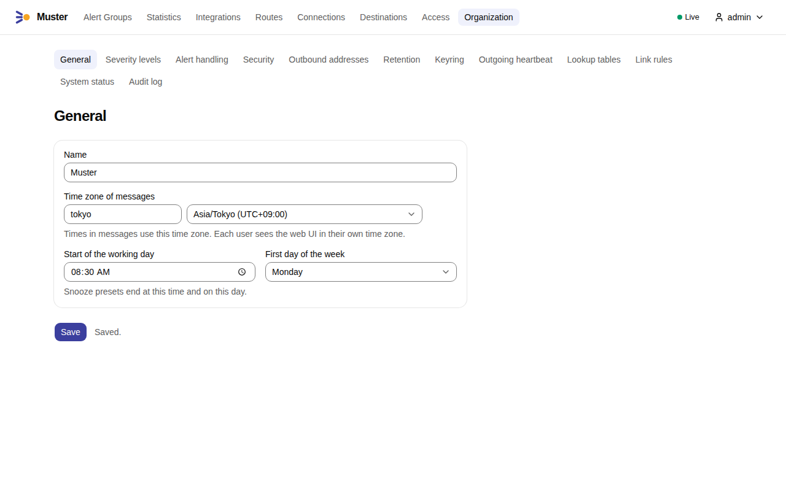
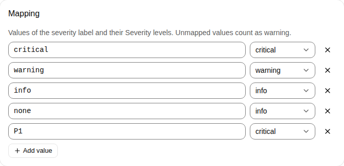
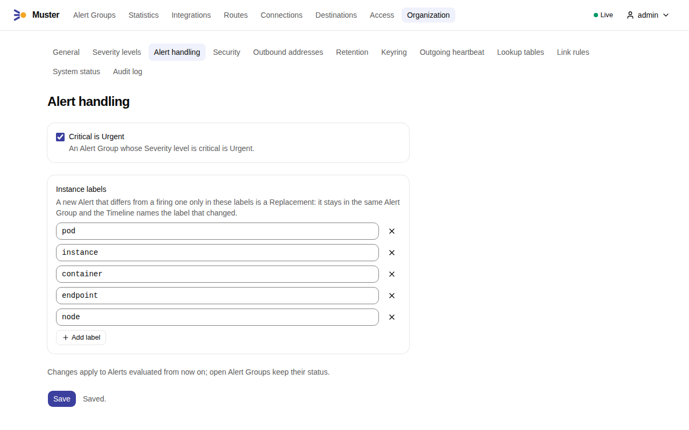
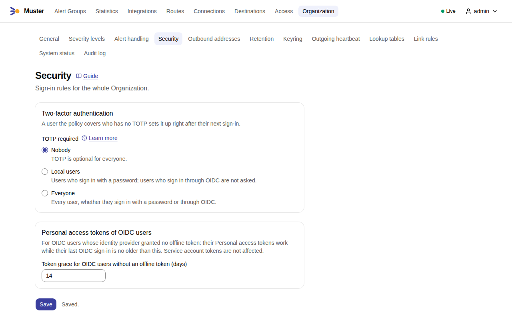
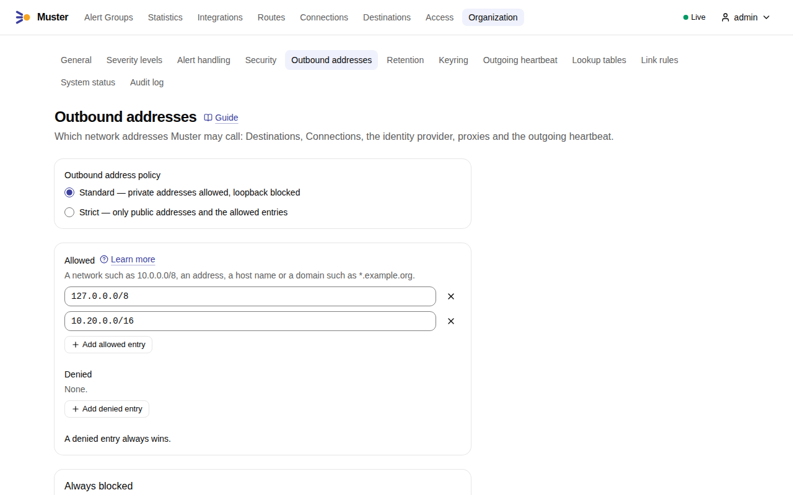
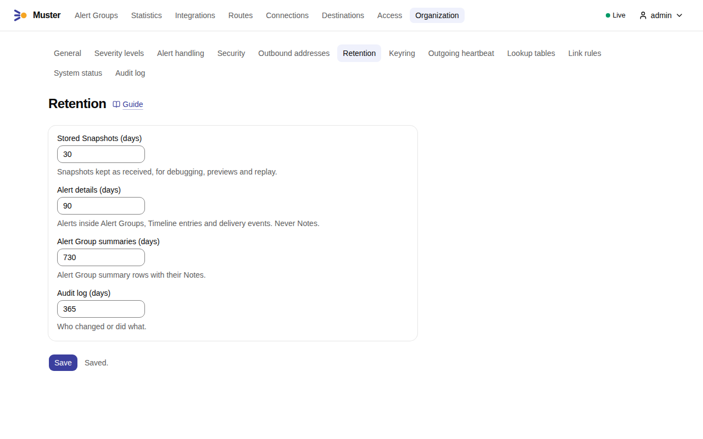
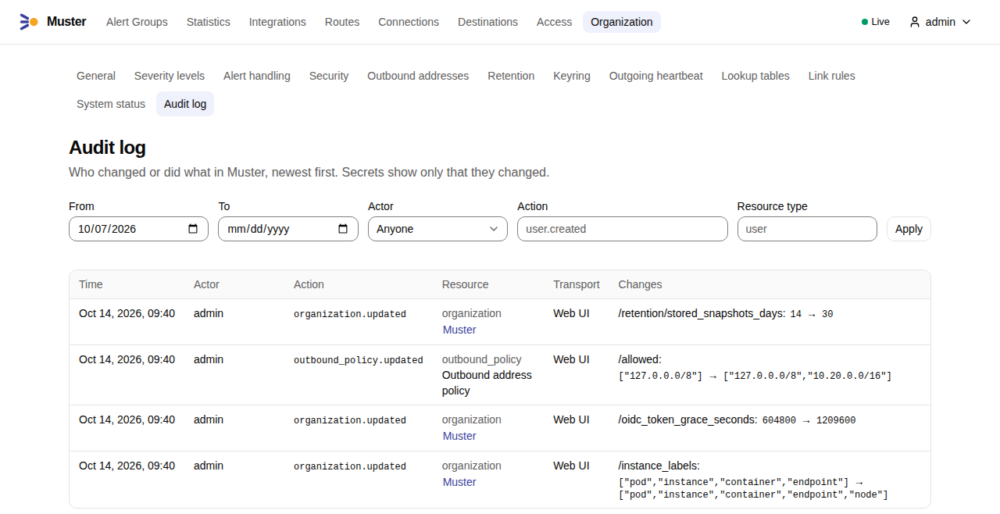
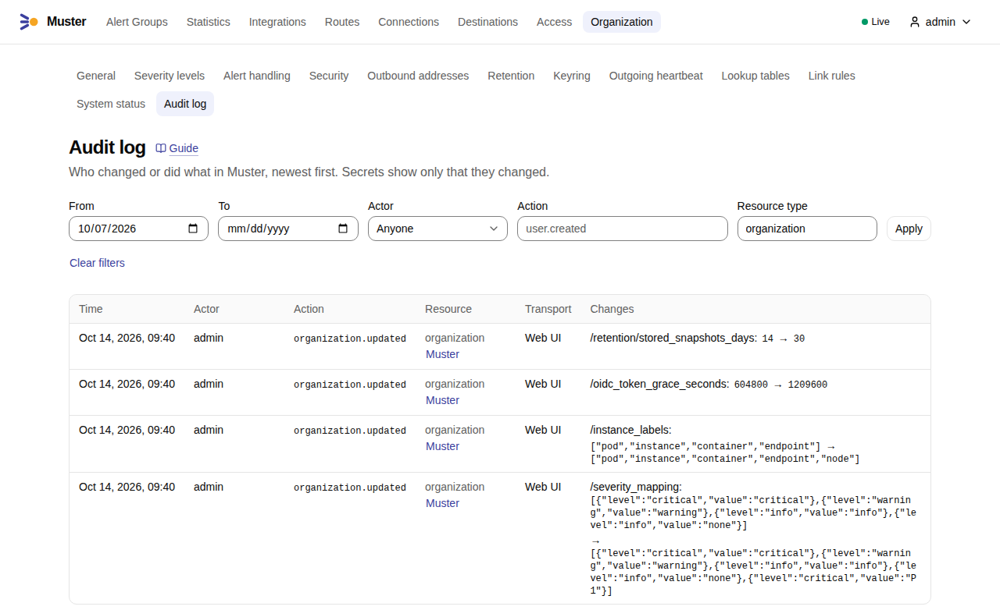
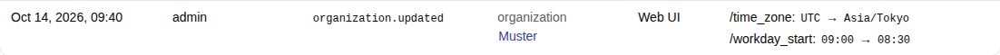

Organization settings¶
The Organization is the owner of all Users, Routes and data in Muster; there is one. Its settings change behaviour for everyone, so only Admins open them: choose Organization in the main navigation, then a page of its sub-navigation. Every change is recorded in the Audit log (Organization → Audit log) with a before and after, and two Admins editing the same page do not overwrite each other: the second save is refused with "Someone else changed these settings. Reload to see them.", and you reload and apply your change again.
The defaults below are what a new installation has.
General¶
Organization → General
- Name (
organization.name,Muster) - The name of the Organization.
- Time zone of messages (
organization.time_zone,UTC) - The time zone of every time in a message in a messenger. It is
UTCuntil you change it, so a new installation shows times such as "started 07:12" in UTC. Times in messages are absolute, never "5 minutes ago". Each User sees the web UI in their own time zone, which they set in their profile. - Start of the working day (
organization.workday_start,09:00) and First day of the week (organization.week_start,monday) - The Snooze presets "Until tomorrow 09:00" and "Until Monday 09:00" end at this time of day and on this day, in the time zone of the person who snoozes. A change applies to Snoozes set afterwards; a Snooze already set does not move. See statuses and commands.
- Open Organization; General opens first.
-
Change the Name, the Time zone of messages — type in Search time zones to narrow the list —, the Start of the working day or the First day of the week, and select Save. "Saved." confirms it.

Severity levels¶
Organization → Severity levels
Alerts say how bad they are in a label. Muster turns its values into three Severity levels: critical, warning and info.
- Severity label (
organization.severity_label,severity) - The label that carries the severity.
- Mapping (
organization.severity_mapping) - Values of that label and their level. By default
criticalis critical,warningis warning, andinfoandnoneare info. A label that is missing counts as info; any other value counts as warning and is shown as received. - Emoji and colours (
organization.severity_styles) - The emoji and the colour of each level: critical 🟥
#d32f2f, warning 🟧#f57c00, info 🟦#1976d2. - Values seen (
organization.severity_values_window, the last 14 days) - The values of the severity label that arrived, with their counts. A value with no mapping is marked "No mapping —
counts as warning" and has a Map action. If your alerts use
P1andpage, map them to critical here.
- Open Organization → Severity levels.
-
Under Mapping, select Add value, enter the value, such as
P1, and choose its level; or select Map next to a value under Values seen. Select Save.
Alert handling¶
Organization → Alert handling
- Instance labels (
organization.instance_labels,pod,instance,container,endpoint) - A new Alert that differs from a firing one only in these labels is a Replacement: it stays in the same Alert Group, and the Timeline names the label that changed.
- Buttons of Root messages (
organization.buttons, all) - Which buttons the Root messages of every Destination show, unless a Destination has a set of its own: All buttons, the default, or Only the buttons I tick, with a tick box for Acknowledge (which brings Unack with it), Resolve, each Snooze duration of your Routes and both Snooze presets. What a Root message shows lists the buttons of a firing and of an acknowledged Root message and follows each tick box. Hidden actions stay in Muster and in the Text commands of Bridges. See Button sets.
From 0.2.0 the page has no Critical is Urgent switch: an Alert Group is Urgent exactly when its Severity level is critical.
Changes to Severity levels and Instance labels apply to Alerts evaluated from then on. Open Alert Groups keep their status. A change of Buttons of Root messages updates the open Root messages of the Destinations that follow the Organization within seconds, as edits that notify nobody.
- Open Organization → Alert handling.
- Change the Instance labels: Add label adds one, the × next to a label removes it.
-
Under Buttons of Root messages, choose Only the buttons I tick and untick what the Root messages should not show, such as Resolve. Select Save.

Security¶
Organization → Security
- TOTP required (
organization.totp_required, Nobody) - Nobody, Local users (Users who sign in with a password) or Everyone (OIDC users too). A person the policy covers who has no TOTP sets it up right after their next sign-in. See TOTP.
- Token grace for OIDC users without an offline token (
auth.oidc_token_grace, 7 days) - Applies to Users who sign in through OpenID Connect when the identity provider granted no offline token. Their
Personal access tokens work while their last OIDC sign-in is no older than this; after that they get
401with the codeoidc_recheck_requireduntil the person signs in through OIDC again. Service account tokens are not affected. See API tokens and automation.
- Open Organization → Security.
-
Choose who must have TOTP under TOTP required, and change the Token grace for OIDC users without an offline token (days). Select Save.

Outbound addresses¶
Organization → Outbound addresses
The Outbound address policy (organization.outbound_policy) says which network addresses Muster may call:
Destinations, Connections, the identity provider, proxies and the outgoing heartbeat. The check runs after the name is
resolved, so a name that points at a blocked address is blocked.
- Standard (the default) allows private addresses and blocks loopback.
- Strict allows only public addresses and the entries you allow.
Allowed and Denied (organization.outbound_allowed, organization.outbound_denied, both empty) take a network
such as 10.0.0.0/8, an address, a host name or a domain such as *.example.org. A denied entry always wins. Some
addresses are always blocked and no allowed entry opens them: link-local, cloud metadata, unspecified and multicast
addresses. A chat server on the loopback address, for one, needs 127.0.0.0/8 in Allowed under Standard.
- Open Organization → Outbound addresses.
-
Choose the Outbound address policy. Add entries with Add allowed entry and Add denied entry, and remove one with the × next to it. Select Save.

The screenshot is of a development installation, whose test chat servers listen on the loopback address.
Retention¶
Organization → Retention
- Stored Snapshots (days) (
retention.stored_snapshots, 14) - Snapshots kept as received, for debugging, previews and replay.
- Alert details (days) (
retention.alert_details, 90) - Alerts inside Alert Groups, Timeline entries and delivery events. Never Notes.
- Alert Group summaries (days) (
retention.alert_group_summaries, 730) - The summary row of an Alert Group, with its Notes.
- Audit log (days) (
retention.audit_log, 365) - Who changed or did what.
Each period is 1 to 36,500 days. The summaries must be kept at least as long as the details, because details go first;
a save that breaks this is refused (retention_order).
- Open Organization → Retention.
-
Enter the number of days of each period and select Save.

Audit log¶
Organization → Audit log (Admins only) records who changed or did what, newest first, for the last 7 days by
default: the time, the actor with the token or the Transport it acted through, the action, the resource and the changes
with their values before and after. Secrets show only that they changed. Entries are kept for retention.audit_log
days, as Retention sets.
-
Open Organization → Audit log.

-
Narrow it with the filters: From and To, the Actor, the Action, such as
organization.updated, and the Resource type, such asorganization; select Apply, and Clear filters to see everything again. The filters are kept in the address, so a link to a filtered list can be shared.
-
Read the changes of an entry in its Changes: each field with its value before and after.

Elsewhere¶
Other Organization pages have their own guides: Keyring in Key rotation, Outgoing
heartbeat (outgoing_heartbeat.url, unset) in Outgoing heartbeat, Lookup
tables and Link rules in Messages and templates, and System status in
Monitoring.
The API¶
GET /api/v1/organization reads the Organization and its ETag; PUT /api/v1/organization replaces the fields above
with If-Match set to that ETag, as API tokens and automation shows. The fields are
name, time_zone, workday_start, week_start, severity_label, severity_mapping, severity_styles,
critical_is_urgent (ignored from 0.2.0, and always read as true), instance_labels, outgoing_heartbeat
(required, with proxy, whose enabled is
required; url is write-only and kept when omitted), retention (stored_snapshots_days, alert_details_days,
alert_group_summaries_days, audit_log_days), totp_required (nobody, local_users or everyone) and
oidc_token_grace_seconds. The outbound policy is GET and PUT /api/v1/organization/outbound-policy, and the values
seen are GET /api/v1/organization/severity-values. Reading the Organization needs any sign-in; reading the outbound
policy and the values seen needs organization:read, and changing anything needs organization:write; only the Admin
Role holds both. workday_start and week_start are optional on an update.